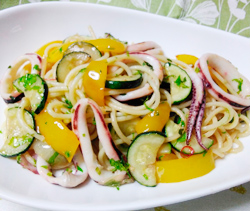

スルメイカとパプリカのオイルパスタ
- 調理時間：30 分
- （一人当たり）
- カロリー：505kcal
- たんぱく質：32.5g
- 脂質：3.3g
- 炭水化物：82.2g
- 塩分：1.3g


＜2人分＞
- スパゲティ（乾麺）
- 200g
- スルメイカ
- 1杯
- ・パプリカ（黄）
- 1/2コ
- ・ズッキーニ
- 1/3本
- ・セロリ
- 80g
- ・玉ねぎ
- 1/4個
A
- ニンニク
- 1片
- 鷹の爪
- 1/2本
- アンチョビ
- お好みで
- オリーブオイル
- 大さじ２
- 塩、コショウ
- 各少々


- ニンニクは、粗みじん切りにする。
鷹の爪は種を取り出しておく。 - スルメイカは内臓を取り除き、胴は1㎝幅の輪切りに、エンペラと足は食べやすく切る。
- パプリカは乱切り、ズッキーニは半月切り、玉ねぎはクシ切り、セロリは斜め薄切りにする。
セロリの葉は粗みじん切りにする。 - 熱湯に塩（分量外）を加え、スパゲティを規定の時間ゆでる。
- フライパンでオリーブオイル、ニンニク、鷹の爪を熱し、香りが出てきたらアンチョビを加えて炒める。
スルメイカとAの野菜を加えて炒め、塩とコショウで味をととのえる。 - ⑤にゆでたスパゲティを加えて、炒め合わせ完成。
スルメイカとパプリカのオイルパスタ
猛暑で食欲も落ち、料理をするのも億劫になりがちな時季。一品で様々な栄養が摂れる具沢山のレシピはいかがですか。
スルメイカは高たんぱく低脂肪の食材です。皮にはたっぷりのコラーゲンが含まれているので皮はむかずに調理するのもお勧めです。コラーゲンはビタミンＣと一緒に摂ると吸収率が高まります。パプリカはビタミンＣを豊富に含む野菜です。カリウムを多く含むズッキーニを合わせ、夏バテ対策を行いましょう。具沢山レシピは組合わせで様々な効果が期待できます。ぜひ毎日の献立に役立てて下さいね。